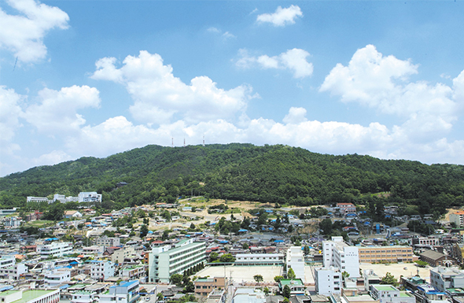

청주에서 가장 큰 저수지로 타원형으로 되어 있으며, 보트놀이를 즐길 수 있고, 주변 일대엔 울창한 산림과 사계절마다 특색 있는 우암산 우회도로, 등산로, 청주 박물관, 우암어린이회관, 상당산성과 연결되어 시민의 휴식처로서 큰 역할을 담당하고 있다. 근처에 있는 명암약수터는 1920년대에 발견된 탄산천으로 주변의 수려한 자연 경관과 함께 탄산 성분과 철분이 함유된 약수를 찾는 시민이 사철찾던 곳이지만 지금은 철분이 기준치 이상 검출되어 약수로는 사용하지 않고 있다. 호텔과 낚시터, 겨울에는 눈썰매를 즐길 수 있는 각종 시설이 있다. 주변 경관이 빼어나고, 주위에 좋은 음식을 접할 수 있는 식당가가 많아 데이트 코스로도 각광 받고 있으며 최근 명암 타워가 준공되어 결혼식 및 각종 회의 장소로 주민들이 즐겨 찾고 있다.
자가용 이용 시
청주IC 기준: 청주IC → 청주 시내 방향 진입 → 상당구 방면 이동 → 명암유원지 도착
서청주IC 기준: 서청주IC → 청주 시내 진입 → 상당구 방면 이동 → 명암유원지 도착
대중교통 이용 시
오송역 기준: 오송역 인근 정류장에서 청주 시내 방향 시내버스 이용 → 청주 시내 환승 후 명암유원지 인근 정류장 하차 → 도보 이동
청주고속·시외버스터미널 기준: 터미널 인근 정류장에서 시내버스 이용 → 청주 시내 환승 후 명암유원지 인근 정류장 하차 → 도보 이동
상당산성
조선시대 산성으로 성곽 산책로가 잘 조성되어 있으며, 청주 시내와 자연 경관을 함께 즐길 수 있는 대표 역사 명소
국립청주박물관
충북 지역의 역사와 문화를 한눈에 볼 수 있는 박물관으로, 건축미와 야외 정원이 뛰어나 산책 코스로도 좋음
청주랜드
동물원과 어린이 체험 시설이 함께 있는 가족형 관광지로, 가볍게 둘러보기 좋음
수암골 벽화마을
벽화와 전망 좋은 카페가 어우러진 관광지로, 청주 시내 전경과 야경 명소로 유명함
꽃게주는보리밥
충청북도 청주시 상당구 명암로 30
명암저수지 인근에서 보리밥과 정식 메뉴를 맛볼 수 있는 한식당
샤브마니아 명암타워점
충청북도 청주시 상당구 명암로 32 104호
샤브샤브를 중심으로 다양한 메뉴를 즐길 수 있는 가족형 식당
작은이태리
충청북도 청주시 상당구 명암로 32 449
이탈리아 감성 메뉴와 파스타·피자를 제공하는 캐주얼 레스토랑
명암갈비
충청북도 청주시 상당구 명암로 일대
가볍게 즐기기 좋은 갈비와 고깃집 스타일 음식점
청주나무호텔
충청북도 청주시 상당구 명암동 명암로293번길 45
명암저수지 접근성 좋고 깔끔한 객실을 갖춘 중급 호텔
Brown Dot
충청북도 청주시 상당구 교서로 32번길 32
가성비 좋은 깔끔한 객실을 제공하는 숙소
JungGam Hotel
충청북도 청주시 상당구 남사로 80번길 3
심플하고 모던한 분위기의 호텔로 관광객에게 인기
아늑호텔 청주우암 2호점
충청북도 청주시 청원구 우암동 143번길 32
가성비 좋은 소규모 숙소로 휴식 목적에 적합
부티크호텔 지
충청북도 청주시 청원구 율량동 2018
세련된 인테리어와 쾌적한 객실을 갖춘 호텔
엔포드호텔 청주
충청북도 청주시 청원구 충청대로 114
비즈니스·관광 모두 적합한 중대형 호텔

우암산
주소
청주시 청원구 우암동·수동 일대
연락처
043-201-2343
자가용 이용 시
청주IC 기준:
청주IC → 가로수로 따라 11.01km 이동 → ‘우암산’ 방면으로 좌회전 → 대성로 따라 202m 이동 → ‘국립청주박물관, 상당산성’ 방면으로 우회전 → 우암산로 따라 310m 이동 → 좌측 방향 → 우암산로 따라 1.38km 이동 → 우회전 → 우암산로 따라 8m 이동 → 도착
서청주IC 기준:
서청주IC → 직지대로 따라 청주 시내 방향 이동 → 사직대로 진입 → 대성로 방면 이동 → ‘국립청주박물관, 우암산’ 방면으로 우회전 → 우암산로 진입 → 우암산로 따라 이동 → 도착
대중교통 이용 시
오송역 기준:
오송역 인근 정류장에서 청주 시내 방향 시내버스 이용 → 사직동·우암동 인근 정류장 하차 → 도보 이동
청주고속·시외버스터미널 기준:
터미널 인근 정류장에서 시내버스 이용 → 사직동·우암동 인근 정류장 하차 → 도보 이동
국립청주박물관
충북 지역의 역사와 문화를 전시한 박물관으로, 건축미와 야외 정원이 뛰어난 문화 공간
청주랜드
동물원과 어린이 체험 시설이 함께 있는 가족형 관광지로, 가볍게 둘러보기 좋음
상당산성
조선시대 산성으로 성곽 산책로와 자연 경관이 잘 어우러진 청주의 대표 역사 명소
청주 중앙공원
청주의 역사적 중심 공간으로, 오래된 은행나무와 비석군이 있는 도심 속 공원
우암동설렁탕
충청북도 청주시 상당구 우암동 337-44
설렁탕과 국밥 위주의 든든한 한식 식당
봉용불고기
충청북도 청주시 상당구 우암동 131-4
불고기와 고기 정식 메뉴가 인기 있는 한식당
우암추어탕
충청북도 청주시 청원구 향군로 1
추어탕 전문점으로 보양식으로 많이 찾는 곳
북일곰탕
충청북도 청주시 상당구 우암동 향군로41번길 9
곰탕과 국밥 위주의 깔끔한 식사 가능
대명순대
충청북도 청주시 상당구 우암동 346-64
순대와 국밥 메뉴로 지역 주민 이용이 많은 곳
청주나무호텔
충청북도 청주시 흥덕구 가경동 1019
우암산과 시내 접근성이 좋은 중급 호텔
브라운도트호텔 청주우암점
충청북도 청주시 청원구 우암동 357-8
가성비와 객실 컨디션이 안정적인 비즈니스 호텔
아늑호텔 청주우암 2호점
충청북도 청주시 청원구 우암동 410-7
조용한 분위기의 소형 숙소로 휴식 목적에 적합
호텔야자 청주서문점
충청북도 청주시 상당구 서문동 125-6
시내 중심에 위치한 가성비 숙소
문암생태공원은 서울의 난지도 공원처럼 쓰레기 매립장으로 이용하기 위해 조성되었다. 1994년부터 청주 지역에서 발생하는 생활쓰레기를 매립하여 2000년 12월 매립을 종료한 이후 부지 안정화 및 환경 정화기간을 거쳤다. 부지가 안정됨에 따라 넓은 공간을 아름다운 공원으로 만들어 활용하고자 2008년 5월 공원조성공사를 시작하여 2009년 11월에 완공하였다. 21만 평방미터의 면적에 가족들이 소풍을 즐길 수 있는 가족공원, 족구와 농구 배구를 즐길 수 있는 웰빙 공원, 생태탐방로, 생태과장, 억새원 등이 있는 생태공원으로 조성되어 있다. 주요시설로는 가족들이 소풍을 즐길 수 있는 피크닉장, 바비큐장, 야외캠핑장, 휴게쉼터, 문암 마당(폭포)등이 있으며, 자연을 느끼고 체험할 수 있는 환경체험놀이장, 조각공원, 생태습지원, 생태관찰테크, 생태탐방로, 꽃묘장, 수목원등이 있고, 또 건강 증진을 위해 조깅코스와 농구장, 족구장 등의 체육시설을 이용할 수 있고 건강 숲 체험장과 테마 웰빙숲 등이 조성되어 있다. 특히 미호천과 잇닿아 있고 무심천 하상에 조성된 자전거 도로 및 산책로와 연결되어 있어 여가, 레저를 즐기려는 사람들에게 인기가 높다.
자가용 이용 시
청주IC 기준:
청주IC → 가로수로를 따라 6km 이동 → 좌회전 → 대신로를 따라 2.32km 이동 → 우회전 → 2순환로를 따라 2.32km 이동 → 옥산·환경사업소 방면 고가도로 옆길 진입 → 314m 이동 → 좌회전 → 무심서로를 따라 1.83km 이동 → 좌회전 → 25m 이동 → 도착
서청주IC 기준:
서청주IC → 직지대로 따라 청주 시내 방향 이동 → 대신로 진입 → 2순환로 방면 이동 → 옥산·환경사업소 방면 고가도로 옆길 진입 → 무심서로 진입 → 무심서로를 따라 이동 → 문암생태공원 도착
대중교통 이용 시
오송역 기준:
오송역 인근 정류장에서 청주 시내 방향 시내버스 이용 → 문암생태공원 방면으로 바로 이동 가능한 노선 이용 → 문암생태공원 인근 정류장 하차 후 도보 이동
청주고속·시외버스터미널 기준:
터미널 인근 정류장에서 문암생태공원 방면으로 바로 이동 가능한 시내버스 노선 이용 → 문암생태공원 인근 정류장 하차 후 도보 이동
무심천 생태하천
문암생태공원과 연결된 청주 대표 하천으로, 산책로와 자전거길이 잘 조성된 도심 생태 공간
청주랜드
동물원과 체험 시설이 함께 있는 가족형 관광지로, 아이들과 함께 방문하기 좋은 명소
국립청주박물관
충북 지역의 역사와 문화를 전시한 박물관으로, 건축미와 야외 정원이 뛰어난 문화 공간
우암산
도심과 인접한 산림 공간으로, 가벼운 등산과 숲길 산책을 즐길 수 있는 자연 명소
문암정
충청북도 청주시 흥덕구 무심서로 1120
한식 위주의 식당으로 공원 인근에서 식사하기 좋은 곳
대가칼국수 문암점
충청북도 청주시 흥덕구 대신로 82
칼국수와 만두가 유명한 지역 주민 맛집
봉용불고기
충청북도 청주시 흥덕구 직지대로 596
불고기와 쌈밥 메뉴로 식사 만족도가 높은 식당
청해수산
충청북도 청주시 흥덕구 무심서로 1112
회와 해산물 요리를 즐길 수 있는 식당
브라운도트호텔 청주우암점
충청북도 청주시 청원구 우암동 357-8
깔끔한 객실과 합리적인 가격의 비즈니스형 호텔
아늑호텔 청주우암점
충청북도 청주시 청원구 우암동 410-7
조용한 분위기의 소형 호텔로 휴식 목적 숙박에 적합
호텔야자 청주서문점
충청북도 청주시 상당구 서문동 125-6
시내 접근성이 좋고 가성비가 뛰어난 숙소
청주나무호텔
충청북도 청주시 흥덕구 가경동 1019
객실 컨디션이 안정적이며 장·단기 숙박 모두 무난한 호텔
충청북도 청주시에 자리한 상당산성 자연휴양림은 조선시대 석성인 상당산성(사적 제212호)의 북쪽 하단에 위치하고 있다. 산성에서 휴양림으로 이어지는 산능선부에는 소나무류와 참나무류가 주로 분포하고 있으며, 휴양림 내 주변의 숲에는 참나무류, 소나무류, 낙엽송, 아까시아, 밤나무, 벚나무, 은행나무 등 다양한 종류의 나무가 생육하여 계절별로 수려한 산림경관을 연출한다.
주요 시설로는 산림문화휴양관, 숲속의 집, 유아숲체험원, 목공예체험장, 가족놀이터, 잔디운동장, 야생화동산 등 가족단위 이용객에 특화된 최신의 산림휴양시설을 갖추고 있으며, 워크숍, 세미나, 수련회, MT 등 단체행사를 할 수 있는 숲속수련장이 있다. 아울러 가족놀이터에는 오감놀이터, 나무수로 등 놀이시설이 있으며, 플라잉디스크, 파크골프, 밧줄놀이 등 다양한 놀이체험을 즐길 수 있다. 휴양림을 중심으로 산성까지 다양한 코스의 탐방로(산책로 1.5km, 임도 4.0km, 등산로 4.0km)가 시설되어 있으며 소요시간은 30분에서 2시간이다. 또한 이용객들은 숲해설을 받으며 지친 몸과 마음을 풀어줄 수 있다.
자가용 이용 시 (청주IC 기준)
청주IC → 가로수로 따라 약 7.5km 이동 → 상당산성 방면 우회전 → 산성로 따라 약 4km 이동 → 상당산성 자연휴양림 도착
자가용 이용 시 (서청주IC 기준)
서청주IC → 직지대로 따라 약 6km 이동 → 상당로 방면 우회전 → 상당산성 방면 진입 → 산성로 따라 약 4km 이동 → 상당산성 자연휴양림 도착
대중교통 이용 시 (오송역 기준)
오송역 → 청주 시내 이동 후 상당산성 방면 시내버스 이용 → 상당산성 입구 하차 → 도보 약 20~30분 이동
대중교통 이용 시 (청주고속·시외버스터미널 기준)
터미널 → 상당산성 방면 시내버스 이용 → 상당산성 입구 하차 → 도보 약 20~30분 이동
상당산성
조선시대 석성으로, 성곽 산책과 청주 시내 전망을 함께 즐길 수 있는 대표 역사 명소
상당산성 옛마을
산성 안에 형성된 전통 마을로, 비빔밥·파전 등 향토 음식을 맛볼 수 있는 공간
국립청주박물관
충북 지역의 역사·문화 유물을 전시한 박물관으로, 건축미와 야외 정원이 뛰어남
명암저수지(명암유원지)
저수지를 따라 산책로가 조성된 휴식 공간으로, 카페와 함께 여유로운 자연 경관을 즐길 수 있음
우암산 순환산책로
완만한 산책 코스로 조성된 도심 속 자연 공간으로, 가벼운 트레킹에 적합
산성비빔밥
충청북도 청주시 상당구 산성동 26-2
상당산성 안에 위치한 대표 향토 음식점, 산행 후 식사로 인기
산성파전마을
충청북도 청주시 상당구 산성동 25-1
파전과 막걸리로 유명한 산성 마을 맛집
명암정
충청북도 청주시 상당구 명암동 23-2
한정식과 백반 위주의 전통 한식 전문점
명암저수지 베이커리 카페 일대
충청북도 청주시 상당구 명암동 2-1 일원
대형 베이커리 카페들이 모여 있는 휴식 공간
청주나무호텔
충청북도 청주시 흥덕구 가경동 1019
상당산성과 시내 접근성이 좋은 중급 호텔
브라운도트호텔 청주우암점
충청북도 청주시 청원구 우암동 357-8
깔끔한 시설과 합리적인 가격의 비즈니스 호텔
아늑호텔 청주우암점
충청북도 청주시 청원구 우암동 410-7
조용한 분위기의 소형 숙소, 휴식 목적에 적합
호텔야자 청주서문점
충청북도 청주시 상당구 서문동 125-6
청주 시내 중심에 위치한 가성비 숙소
미동산수목원은 해발 557.5m의 미동산은 청주시 상당구 미원면의 동쪽에 있는 산이라 하여 붙여진 이름이다. 이곳은 장미원 등 51개의 일반·특별전문원을 조성하여 총 1,593종 31만 본의 식물을 보전, 관리하고 있다. 또한 산림과학박물관, 난대식물원, 다육식물원, 식충공중식물원, 목재문화 체험장, 산림환경생태관 등이 있어 볼거리와 풍성한 체험거리를 제공하고 있다. 재미있는 식물이야기로 숲의 중요성과 고마움을 알려주는 숲해설 프로그램을 비롯하여 유아들을 위해 마련된 즐거운 숲 속놀이터 유아숲체험원이 있으며, 홈가드닝, 나무의사 양성교육 등 산림 치유 및 교육 프로그램을 운영하는 산림교육센터가 있어 숲과 더욱 가까워질 수 있다.
청주IC 기준
청주IC → 가로수로를 따라 동쪽 방향으로 이동 → 대신로 진입 → 2순환로 방면으로 우회전 → 2순환로를 따라 이동 → 미동산수목원 진입로로 좌회전 → 미동산수목원 도착
서청주IC 기준
서청주IC → 서청주IC 교차로에서 직지대로로 진입 → 대신로 방면으로 좌회전 → 2순환로를 따라 이동 → 미동산수목원 진입로로 좌회전 → 미동산수목원 도착
대중교통 이용 시 오송역 기준
오송역에서 청주시내 방향 시내버스 환승 후 ‘미동산수목원’ 정류장 또는 근처 정류장에서 하차 → 도보 이동
청주고속·시외버스터미널 기준
터미널 인근 정류장에서 시내버스 환승 후 ‘미동산수목원’ 인근 정류장 하차 → 도보 이동
청주랜드
동물원과 체험 시설이 함께 있는 가족형 관광지로 아이들과 나들이하기 좋은 장소
상당산성
조선시대 산성으로 성곽 산책과 자연 경관을 즐길 수 있는 대표 명소
국립청주박물관
충북 지역의 역사와 문화를 전시하는 박물관으로 건축과 정원이 뛰어난 문화 공간
문암생태공원
무심천 수변 생태를 잘 보여주는 공원으로 자연 관찰과 산책 코스로 적합
송원식당
충청북도 청주시 상당구 서원대로 117
칼국수와 수제비를 중심으로 든든한 한 끼 식사를 할 수 있는 전통국수집
청풍식당
충청북도 청주시 흥덕구 풍서로 45
백반과 한식 메뉴가 다양하게 준비된 지역 식당
황금돈까스
충청북도 청주시 흥덕구 복대로 234
돈까스와 파스타 메뉴로 가족 단위 방문객에게 인기 있는 식당
무심천카페거리
충청북도 청주시 상당구 무심서로 일대
무심천 인근에 여러 카페가 모여 있어 산책 후 커피 한 잔하기 좋은 장소
청주나무호텔
충청북도 청주시 흥덕구 가경동 1019
깔끔하고 안정적인 시설을 갖춘 중급 호텔로 관광 후 숙박에 적합
부티크호텔 지
충청북도 청주시 상당구 상당로 55번길 40
세련된 인테리어와 쾌적한 객실을 제공하는 시내형 호텔
엔포드호텔 청주
충청북도 청주시 청원구 충청대로 114
주차와 접근성이 좋은 중형 호텔로 가족 단위 여행객에게 적합
아늑호텔 청주우암점
충청북도 청주시 청원구 우암동 410-7
가성비 좋은 깔끔한 숙소로 짧은 일정 체류에 적합